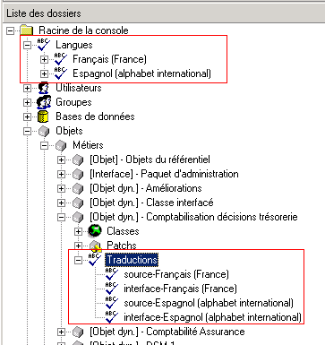
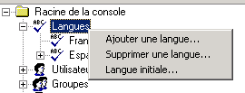
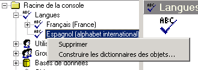
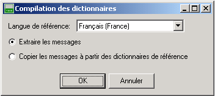
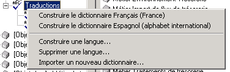
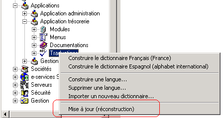
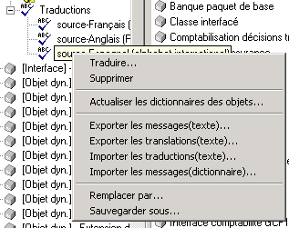
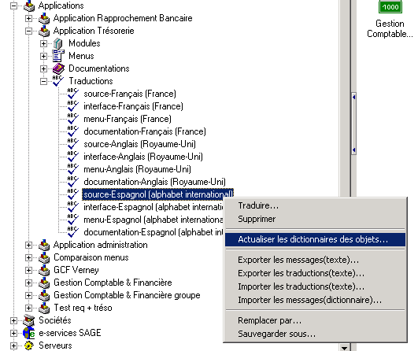

Administration des dictionnaires (traduction)
Sommaire |
Glossaire
Rappel sur le principe de la traduction
Une Application métier est constituée de modules.
Pour chaque module on peut associer des dictionnaires qui contiennent les messages du module et leur traduction.
Dans une langue, le dictionnaire de l'application est la fusion des dictionnaires des modules de l'application.
Quand l'utilisateur choisit une langue, le dictionnaire associé est chargé en mémoire. Les écrans et les messages sont traduits au moment de leur affichage.
Pour des raisons de performances et de modularité, pour une langue donnée, les dictionnaires sont divisés en trois parties :
- le dictionnaire d'interface construit avec les messages contenus dans les écrans et états.
- le dictionnaire source construit avec les messages écrits dans les objets métiers et le source du programme.
- le dictionnaire menu avec les entrées dans le menu principal de l'application.
Les dictionnaires sont modifiables par les utilisateurs finaux qui pourront ainsi améliorer le message traduit.
Normalement, les dictionnaires seront fournis ensemble avec les modules. Le développement d'un module pourra impliquer des changements dans les dictionnaires associés.
Chaque déploiement d'une nouvelle version pourrait donc écraser la version antérieure d'un dictionnaire. En conséquence, pour éviter l'écrasement des modifications faites par les utilisateurs, un dictionnaire delta est créé contenant ces modifications, le dictionnaire fourni restant ainsi inchangé. Le dictionnaire delta s'applique comme un patch sur le dictionnaire fourni. Si un même message est contenu dans le dictionnaire original et le dictionnaire delta, c'est la traduction delta qui est prioritaire.
En résumé, chaque module pourra avoir, pour chaque langue de traduction trois dictionnaires fournis, menu, source et interface.
Chaque dictionnaire fourni pourra être modifié. Ces modifications seront enregistrées dans les trois dictionnaires delta d'un module. Les trois dictionnaires d'une application (source, menu et interface) seront construits en fusionnant les dictionnaires des objets et menus associés à cette application.
Gestion de la traduction
Menu associé aux Langues
La gestion des dictionnaires est accessible via la console d'administration.

Une rubrique "Langues" dans la racine permet de définir les langues utilisées.
Le menu contextuel de l'élément "Langues" permet d'ajouter, supprimer des langues et de définir la langue initiale du conteneur.

La langue initiale (cf glossaire) du conteneur définit la langue de l'application avant la connexion à la base et peut être différente d'un ordinateur à un autre.

Une fois la langue déclarée, il s'agit de construire les dictionnaires.
Cette construction peut s'effectuer de deux manières :
1. Par extraction des messages
- On parcours l'ensemble des sources de messages dont on dispose afin d'extraire les messages. Lorsqu'on ne dispose pas de ces sources (unités outils par exemple), on s'appuie sur la langue de référence paramétrée. Cette méthode est utile pour le processus de traduction SAGE et pour les partenaires qui créent de nouveaux messages.
2. Par copie des messages d’un dictionnaire équivalent dans une autre langue.
- On s'appuie uniquement sur langue de référence.Cette méthode est utile si on souhaite simplement ajouter une nouvelle langue et la traduire sans rien modifier à l'application. (tout les messages dont on a besoin sont déjà extraits).
| Tip : La méthode par copie est plus rapide que la méthode par extraction. |

Menu associé aux nœuds « Traduction »
Le menu contextuel de l'élément "Traduction" permet la construction de ces dictionnaires.

- Construire une langue
- Cette fonction crée tous les dictionnaires associés à l’objet en utilisant soit la méthode par extraction soit la méthode par copie .
- Supprimer une langue
- Cette fonction supprime tous les dictionnaires associés à l’objet.
- Importer un nouveau dictionnaire
- Cette fonction importe un dictionnaire à partir d’un fichier dictionnaire . Les fichiers dictionnaires peuvent être sauvegardés par la fonction « sauvegarder sous » du menu associé aux dictionnaires.
Les nœuds « Traduction » associés aux « Applications » possède une fonction supplémentaire :

- Mise à jour
- Après une mise à jour de la Ligne 1000, des nouveaux dictionnaires de référence (fournis par SAGE France) sont déployés. Les dictionnaires, dans une langue étrangère, des objets et des applications peuvent alors être obsolètes.
La technique pour actualiser ces dictionnaires consiste en trois étapes :
1. Actualiser d’abord les dictionnaires des objets dans la langue concernée à partir du dictionnaire de l’application.
- Cette opération actualise la traduction dans chaque dictionnaire d’objet associé à l’application les messages. ( Fonction « Actualiser les dictionnaires des objets » du menu associé aux nœuds « Traduction » des « Applications » )
2. Reconstruction des dictionnaires des objets par extraction ou copie à partir des dictionnaires de la langue de référence(français).
- Cette étape ajoute dans les dictionnaires étrangers des objets les nouveaux messages et marque comme supprimés les messages qui n’existent plus. ( Fonction « Construire une langue » du menu associé aux nœuds « Langues » )
3. Fusion des dictionnaires étrangers des objets dans un nouveau dictionnaire d’application.
- Après cette dernière étape, le dictionnaire de l’application doit être en phase avec l’application mais les nouveaux messages ne sont pas encore traduits. ( Fonction « Construire une langue » du menu associé aux nœuds « Traduction » des « Applications » )
Menu associé à chaque dictionnaire.
Le menu contextuel de chaque dictionnaire permet de modifier le dictionnaire (traduire les messages) via une interface graphique, d'exporter les messages dans un fichier texte, d'importer les traductions à partir d'un fichier texte ou un fichier dictionnaire ('*.dut, *.dud') ou d'importer tous les messages et leur traduction à partir d'un fichier dictionnaire. Le dictionnaire peut être complètement remplacé à partir d’un fichier et il peut être sauvegardé dans un fichier.

Figure 7 Le menu contextuel d'un dictionnaire.
- Traduire
- Cette fonction appelle l’interface de traduction des messages.
- Supprimer
- Cette fonction supprime le dictionnaire.
- Actualiser les dictionnaires des objets
- Cette fonction met à jour les traductions dans tous les autres dictionnaires. La traduction d’un message sera reporté dans tous les dictionnaires qui comporte le même message.
Règle pour remplacer la traduction :
{kind=link}
- Exporter les messages (Texte)
- Cette fonction exporte tous les messages, sans leur traduction, dans un fichier texte. Ce fichier peut être utilisé pour réaliser une traduction à l’extérieur du produit puis réimporté à l’aide de la fonction « Importer les traductions »
- Exporter les traductions (Texte)
- Cette fonction exporte tous les traductions dans un fichier texte. Ce fichier peut être utilisé pour réaliser une traduction ou correction à l’extérieur du produit puis réimporté à l’aide de la fonction « Importer les traductions »
- Importer les traductions (Texte)
- Cette fonction importe les traduction d’un fichier texte.
- Importer les messages (dictionnaire)
- Cette fonction importe les traductions contenues dans un fichier dictionnaire. Les traductions qui se trouvent dans le dictionnaire importé remplacent et écrasent les traductions du dictionnaire.
- Remplacer par …
- Cette fonction remplace la totalité du dictionnaire.
- Sauvegardez sous
- Cette fonction sauvegarde le dictionnaire dans un fichier au format « dictionnaire ».
Construction des dictionnaires applications
Pour une application donnée (exemple : Applications/Application trésorerie/Traductions), le menu contextuel Construire le dictionnaire - dans notre exemple Espagnol (alphabet international) – permet de générer ou mettre à jour tous les dictionnaires application.
Au cours de cette construction, les messages qui ne sont plus utiles sont marqués avec le flag « Supprimé ». L’écran Traduction des messages – voir - permet de supprimer ces messages définitivement via le menu contextuel Supprimer les messages situé dans la grille d’affichage.
Traduction des dictionnaires
La traduction peut s'effectuer sur les dictionnaires objets et application.
| Tip : Il est conseillé de traduire les dictionnaires objets puis de les fusionner pour obtenir le dictionnaire application traduit. |
Il existe deux modes d’utilisation permettant la traduction des messages :
1. L'interface de traduction
- Sur un dictionnaire donné, le menu contextuel Traduire permet d’afficher l’écran Traduction des messages'. La traduction peut se faire directement dans cette interface
2. L'export de fichier messages
- Sur un dictionnaire donné , le menu contextuel Exporter les messages à traduire… permet de générer un fichier texte contenant tous les messages de l’application.
Sur ce même dictionnaire, le menu contextuel Traduire permet d’afficher l’écran Traduction des messages. A partir de cet écran Traduction des messages, il est possible de filtrer la liste des messages de la grille (traduits, A confirmer, importés et supprimés) et d'extraire cette sélection en utilisant le menu contextuel Exporter les messages non filtrés. A titre d’exemple, cette fonction permet, en décochant préalablement le filtre "traduits", d’exporter uniquement les messages non encore traduits.
Les messages sont générés uniquement en fichier texte.
Import de fichier messages
Sur un dictionnaire donné, le menu contextuel Importer les messages à traduire… permet d’importer un fichier texte contenant tous les messages traduits.
| Attention : Il n’est plus possible de réintégrer un fichier texte lorsqu'une modification, une suppression ou un ajout a modifié le dictionnaire d’origine entre l’export et la réintégration. l’une des 2 premières ligne d’entête du fichier texte a été supprimée ou modifiée. |
| Attention : Ne modifier pas les 2 premières ligne d’entête du fichier texte. |
Actualisation des dictionnaires objet
Après avoir traduit les messages (par interface ou import) il est nécessaire de mettre à jour les autres dictionnaires objet.
Sur un dictionnaire donné (exemple : Applications/Application trésorerie/Traductions/interface-Espagnol (alphabet international), le menu contextuel Actualiser les dictionnaires des objets… permet de mettre à jour l’ensemble des dictionnaires objet de l’application.

Figure 11. Actualiser les dictionnaires des objets
| Whos here now: Members 0 Guests 1 Bots & Crawlers 0 |